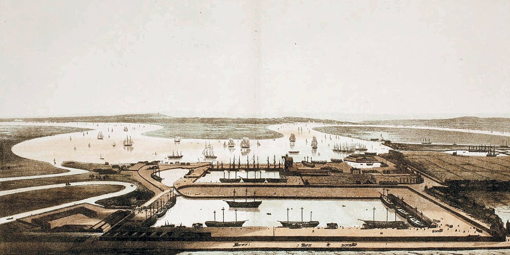

Appendix
Timeline: The East India Company at Wapping

1600 The East India Company is chartered by Queen Elizabeth I. 218 subscribers invest £68,000.
1601 The first fleet sails — four ships, 500 men. Only 43 return.
1612 The Company establishes its first factory at Surat, on India's west coast.
1623 The Amboyna Massacre. Dutch VOC officials torture and execute ten English Company merchants on fabricated charges. The Company abandons the Spice Islands and turns to India.
1639 A factory is established at Madras. It will become Fort St George.
1657 Cromwell renews the Company's charter. The Commonwealth needs the revenue.
1661 Charles II grants Bombay to the Company as part of Catherine of Braganza's dowry.
1668 The Company takes possession of Bombay. A possession, not just a factory.
1686–1690 The Anglo-Mughal War (Child's War). The Company attacks the Mughal Empire and is comprehensively defeated; its envoys prostrate themselves before Aurangzeb to win back its trading rights.
1690 A factory is established at Calcutta. Fort William follows.
1695 Henry Every plunders the Ganj-i-Sawai, the richest ship in the Mughal fleet. Aurangzeb seizes the Company's factories; the first worldwide manhunt follows.
1696 Six of Every's crew hang at Execution Dock — after a first jury acquits them and the trial is run again. Every himself is never caught.
1701 Captain Kidd is hanged at Execution Dock, near the Prospect of Whitby.
1751 Parliament's Gin Act finally throttles the Gin Craze; Hogarth publishes Gin Lane the same year — "drunk for a penny, dead drunk for twopence."
1757 Robert Clive wins the Battle of Plassey. Bengal falls under Company control.
1765 The Company gains the diwani — the right to collect revenue in Bengal, Bihar, and Orissa.
1770 The Bengal Famine. Ten million die. The Company's revenue extraction continues.
1772 The credit crisis. Overextended and dividend-heavy, the Company cannot pay its bills; Parliament rescues it with a £1.4 million loan — the first state bailout of a corporation.
1773 The Regulating Act puts Treasury oversight inside the Company; the Tea Act ships its unsold hoard to America, cheap, with the threepenny duty kept for the principle. In December, Boston throws 342 chests into the harbour.
1774 News of the Boston Tea Party reaches London in January. The port is closed, troops follow, and the road to American independence opens over threepence a pound.
1789–1790 The mutiny on the Bounty. Captain Bligh and eighteen loyal men are set adrift; all but one survive a 3,600-mile open-boat voyage to Timor.
1788 A sailor's fuchsia reaches a Wapping windowsill. The nurseryman James Lee buys it and sells cuttings at a guinea apiece — and the Prospect's sill gets a slip of Britain's first, the beginning of the pub's oldest living tenant.
1788–1795 Edmund Burke leads the impeachment of Warren Hastings, Governor-General of Bengal — the Company's rule in India put on trial in Westminster Hall. Seven years later, Hastings is acquitted on every charge.
1793 The Permanent Settlement. Land revenue fixed in perpetuity, pushing Bengal into poverty.
1799 Tipu Sultan is defeated at Seringapatam. The Company takes Mysore.
1800–1839 The opium trade expands. Indian poppy is forced on China via Canton.
1829 Sir Robert Peel founds the Metropolitan Police; the new blue-coated "bobbies" replace the old parish night-watch. They will never quite reach the poorest lanes of the East End — a gap those streets fill themselves, sixty years on, with watch committees of their own.
1833 The Charter Act. The Company loses its monopoly on trade but keeps its territory.
1838 The Fighting Temeraire passes Wapping under tow to the breakers at Rotherhithe. A painter gets it down.
1839 The First Opium War begins. The Royal Navy enforces the Company's drug trade.
1848 The junk Keying — the first Chinese vessel to reach Britain — moors on the Thames below Blackwall, and Londoners pay a shilling to board her. Her crew's displays of Chinese boxing are among the first the city has ever seen. Forty years downriver, a Wapping laundress will still be keeping the art.
1851 The Great Exhibition opens under Paxton's glass in Hyde Park; six million file past the manufactured wealth of empire. Among the exhibits is the Koh-i-Noor, taken from the Punjab the year before.
1857 The Indian Rebellion (Sepoy Mutiny). The Company's rule crumbles.
1858 The Government of India Act dissolves the Company; the Crown takes over, and the machine continues under a new name. That same summer the Thames, thick with the city's raw sewage, chokes London in the Great Stink and drives Parliament out of its own chambers — bullying the great sewers into being at last. And that same year aerated tonic water is patented: quinine made just drinkable, and the gin and tonic is born — an anti-malarial ration to keep the empire's men upright in its fever provinces.
1861 The Tooley Street Fire. The riverside warehouses south of London Bridge go up — tallow and saltpetre feeding a blaze that burns for the better part of a fortnight, destroys some eleven acres of wharves, and kills James Braidwood, father of the London fire brigade. The docks learn again what they are built of: everything that burns.
1880 The clipper Cutty Sark's mate kills a seaman on a voyage to Anjer; her captain, John Wallace, helps the mate escape and later takes his own life. The mate is convicted of manslaughter two years later.
1888 The Whitechapel murders terrorise the East End. Five canonical victims between August and November; the killer is never identified.
1889 The Great Dock Strike. Tens of thousands of dockers walk out across Wapping and the East End and hold the greatest port on earth still for five weeks, until the owners concede the "dockers' tanner" — sixpence an hour. For once, the men at the bottom set the price.
1940–1945 The Blitz. The Company's docks are bombed. The empire's engine room burns.
1991 Canary Wharf opens on the old docks. New glass towers rise where Company ships once loaded.
Present The Prospect of Whitby serves craft beer. The machine runs in spreadsheets. The river flows.